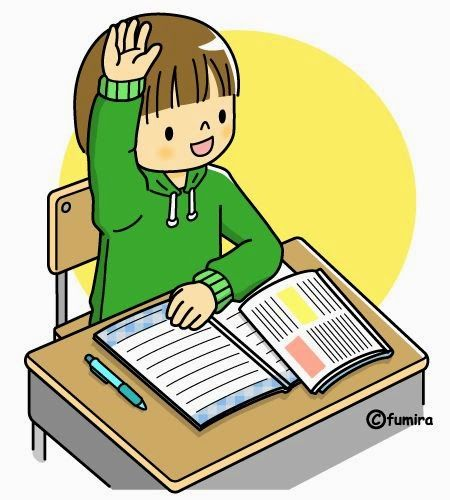

Democracia escolar
¿Qué es?
La democracia escolar son relaciones de poder en la escuela, entre los distintos estamentos y organismos del gobierno escolar. La democracia escolar procura la máxima participación de la comunidad estudiantil en las decisiones que afecten los derechos o necesidades de los estudiantes.
En una institución democrática, los estudiantes tienen autonomía para decidir sobre asuntos que afecten sus derechos como personas o como estudiantes, autonomía para participar, para ser representados, para comprender la realidad, para opinar, valorar, etc. Pero no sólo tienen que reconocer todos esos derechos, sino que también tienen que proveer y cautelar la practica de ellos de una manera responsable.
Ejemplos
Un ejemplo es la práctica de la democracia en los colegios como lo es la elección de representantes estudiantiles o de un buen gobierno estudiantil.
Cuando los docentes comigen exámenes, la sola posibilidad de dar explicaciones por sus correcciones es un elementa democrático pues va en contra del pensamiento total de un lider o referente.
¿Sabías qué?
El aprendizaje más importante es que la democracia escolar principalmente son las relaciones de poder en la escuela, entre distintos organismos del gobierno escolar. Y siempre procuran la máxima participación de todos los estudiantes o profesores.
Bibliografría
https://i.pinimg.com/736x/1e/ee/64/1eee64eb27cc4bad01d449ce7d5258c5.jpg
{kind=link}
{kind=link}
https://blog.master2000.net/wp-content/uploads/2019/03/POST.png
{kind=link}
https://kellyosorionoveno4.wordpress.com/2016/03/16/democracia-escolar/
http://andesris.blogspot.com/2009/02/que-es-la-democracia-escolar.html
Gobierno escolar
¿Qué es?
El gobiemo escolar es un conjunto que orienta, dirige y administra la institución educativa en los aspectos pedagógicos, financieros, culturales y sociales evitando a toda costa la autocracia en busca dé que cada etapa escolar cuente con la mayor participación de la comunidad educativa. Ayuda con nomas, funciones y ejercicios o practicas para tener una mejor experiencia en la institución, integrando la posibilidad participativa en todos los estudiantes para que asuman una postura critica, generando responsabilidad social y politica para un buen futuro.

¿Quiénes lo integran?
Lo integran: el rector, dos representantes de los docentes, dos representantes de los padres de familia, un representante de grado 11 (diferente al électo como personero escolar), un representante de los exalumnos y por ultimo un représentante del sector productivo o comercial.
¿Qué hace el gobierno escolar? Ejemplos:
* Orienta el proceso educativo con la asistencia del Consejo Académico.
* Ejerce las funciones disciplinarias que le atribuyan la ley, los reglamentos y el manual de convivencia.
* Identifica las nuevas tendencias, aspiraciones e influencias para canalizarlas a favor del mejoramiento.
¿Sabías qué?
El aprendizaje más importante de este texto, es que el gobierno escolar son unas personas que dirigen y administran una institución en muchos aspectos, evitando a toda costa la autocracia, ya que va en busca de la mayor participación por parte de la comunidad educativa.
Bibliografía
https://i.pinimg.com/originals/32/f5/f2/32f5f28954817515bef3deb9bb38117a.jpg
{kind=link}
{kind=link}
https://www.colegiodiocesano.edu.co/v2/wp-content/uploads/2021/07/gobierno-escolar1.jpg
{kind=link}
https://kellyosorionoveno4.wordpress.com/2016/03/16/democracia-escolar/